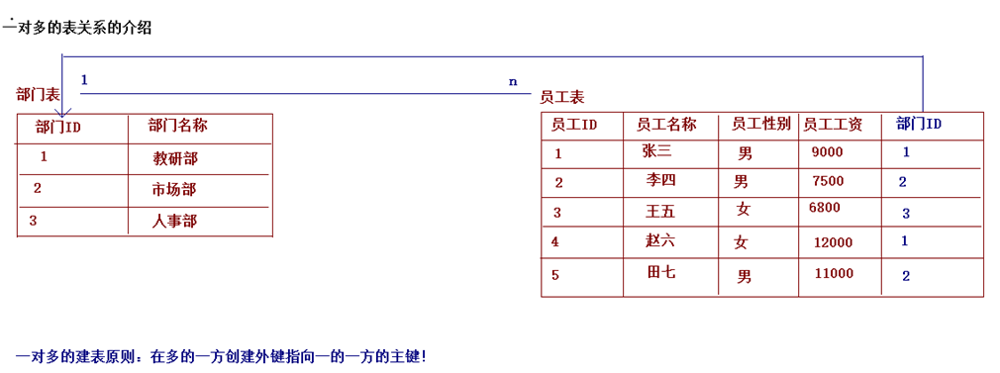
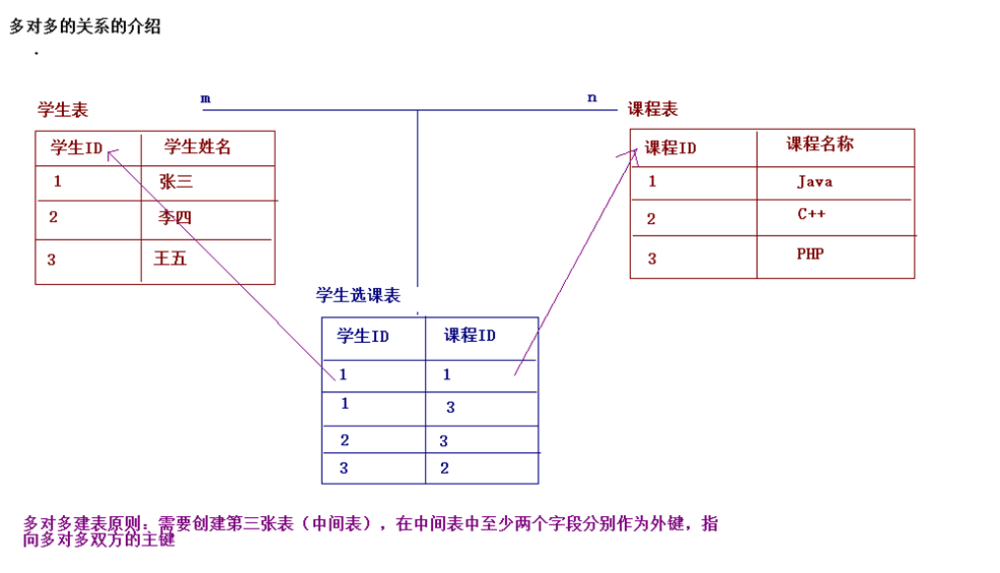
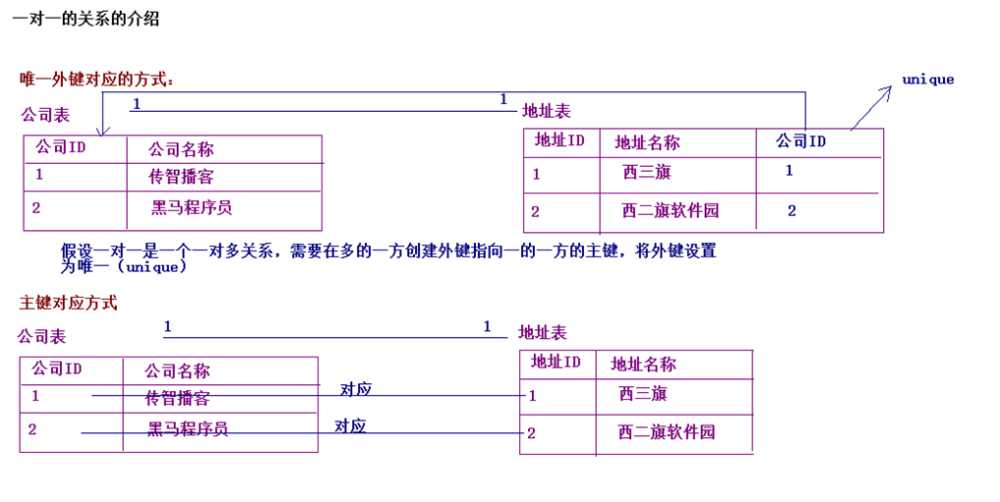
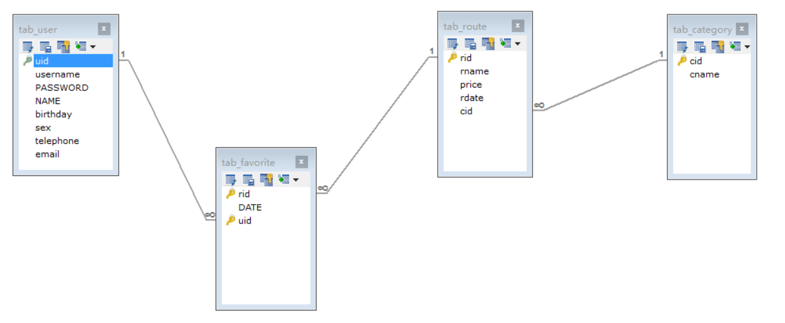

02-简单查询语句与约束一. 今日目标二. 今日内容(一) 基本查询语句1. 基本语法2. 简单查询语句3. 条件查询什么是条件查询?条件运算符数据准备示例代码4. 排序查询语法：order by 子句排序方式注意示例代码:5. 聚合函数注意：聚合函数的计算，排除null值。示例代码6. 分组查询语法：group by 分组字段注意：示例:7. 分页查询(二) 常用约束介绍1. 非空约束 : not null添加非空约束删除非空约束2. 唯一约束 : unique添加唯一约束删除唯一约束注意事项3. 主键约束：primary key添加主键约束删除主键约束4. 自动增长：auto_increment 5. 外键约束：foreign key添加外键删除外键示例代码6. 级联操作(三) 数据库设计1. 多表关系一对多关系多对多关系一对一关系2. 建表原则一对多关系多对多关系一对一关系3. 多表设计案例案例分析案例实现关系模型图三. 作业练习作业一 : 独立完成下列数据库操作作业二 : 多表设计练习
select 字段列表from 表名列表where 条件列表group by 分组字段having 分组之后的条件order by 排序limit 分页限定1. 多个字段的查询
xselect 字段名1，字段名2... from 表名；-- 注意： 如果查询所有字段，则可以使用*来替代字段列表。select * from 表名；2. 去除重复：distinct
xxxxxxxxxx注意:只有当查询的所有字段的值都相同,才会认为是重复数据-- 查询学生的姓名 及数学分数SELECT DISTINCT NAME ,math FROM student ;3. 计算列
xxxxxxxxxx一般可以使用四则运算计算一些列的值。（一般只会进行数值型的计算）
xxxxxxxxxx-- 查询学生的姓名 及数学分数 总分SELECT `name` AS 姓名 ,math AS 数学,math+ IFNULL(english,0) AS 总分 FROM student;
ifnull(表达式1,表达式2)：null参与的运算，计算结果都为null * 表达式1：哪个字段需要判断是否为null * 如果该字段为null后的替换值。
4. 起别名： as(可以省略)
xxxxxxxxxx-- 查询学生的姓名 及数学分数SELECT DISTINCT NAME AS 姓名 ,math AS 数学 FROM student ;where子句后跟条件,对查询的结果进行筛选
| 运算类型 | 运算符 | 说明 |
|---|---|---|
| 比较运算 | > 、< 、<= 、>= 、= 、<> | 例如: age>18 , <>表示不等,在mysql5.x版本可以使用!= |
| 范围运算 | BETWEEN 值1 AND 值2 | 例如: BETWEEN a AND b ,值在a和b之间,含头含尾 |
| 集合运算 | IN( 集合) | 例如: in (1,2,3) ,值在集合之中 |
| 模糊运算 | LIKE _或者% | _:单个任意字符 %：多个任意字符 |
| 空值运算 | IS NULL IS NOT NULL | 字段值为NULL 字段值不为NULL |
| 逻辑运算 | and && or ιι not ! | 与 或 非 |
xxxxxxxxxx-- 数据准备DROP TABLE IF EXISTS `student`;CREATE TABLE `student` ( `id` int(11) DEFAULT NULL, `name` varchar(20) DEFAULT NULL, `age` int(11) DEFAULT NULL, `sex` varchar(5) DEFAULT NULL, `address` varchar(100) DEFAULT NULL, `math` int(11) DEFAULT NULL, `english` int(11) DEFAULT NULL) ENGINE=InnoDB DEFAULT CHARSET=utf8;insert into `student`(`id`,`name`,`age`,`sex`,`address`,`math`,`english`) values(1,'马云',55,'男','杭州',66,78),(2,'马化腾',45,'男','深圳',98,87),(3,'马景涛',55,'男','香港',56,77),(4,'柳岩',20,'女','湖南',76,65),(5,'柳青',20,'男','湖南',86,NULL),(6,'刘德华',57,'男','香港',99,99),(7,'马德',22,'女','香港',99,99),(8,'德玛西亚',18,'男','南京',56,65);xxxxxxxxxx-- 查询年龄大于20岁的学生SELECT * FROM student WHERE age > 20;SELECT * FROM student WHERE age >= 20;-- 查询年龄等于20岁的学生SELECT * FROM student WHERE age = 20;-- 查询年龄不等于20岁的学生SELECT * FROM student WHERE age != 20;SELECT * FROM student WHERE age <> 20;-- 查询年龄大于等于20 小于等于30 的学生SELECT * FROM student WHERE age >= 20 && age <=30;SELECT * FROM student WHERE age >= 20 AND age <=30;SELECT * FROM student WHERE age BETWEEN 20 AND 30;-- 查询年龄22岁，18岁，25岁的学生信息SELECT * FROM student WHERE age = 22 OR age = 18 OR age = 25SELECT * FROM student WHERE age IN (22,18,25);-- 查询英语成绩为null的学生SELECT * FROM student WHERE english = NULL; -- 不对的。null值不能使用 = （!=） 判断SELECT * FROM student WHERE english IS NULL;-- 查询英语成绩不为null的学生SELECT * FROM student WHERE english IS NOT NULL;-- 查询姓马的学生有哪些？ likeSELECT * FROM student WHERE NAME LIKE '马%';-- 查询姓名第二个字是化的的学生SELECT * FROM student WHERE NAME LIKE "_化%";-- 查询姓名是3个字的人的学生SELECT * FROM student WHERE NAME LIKE '___';-- 查询姓名中包含德的的学生SELECT * FROM student WHERE NAME LIKE '%德%';order by 子句xxxxxxxxxxorder by 排序字段1 排序方式1 ， 排序字段2 排序方式2...xxxxxxxxxxASC：升序，默认的。DESC：降序。xxxxxxxxxx* 如果有多个排序条件，则当前边的条件值一样时，才会判断第二条件。* 对含有null值的列进行排序,null永远最小
xxxxxxxxxx-- 查询学员信息,按照数学成绩升序排序 如果数学成绩相同按照英语成绩降序SELECT * FROM student ORDER BY math ASC ,english DESC ;-- 查询学生信息,按照英语升序排序SELECT * FROM student ORDER BY english DESC ; -- 在mysql排序中null值最小xxxxxxxxxx将一列数据作为一个整体，进行纵向的计算。1. count：计算个数* 一般选择非空的列：主键 `count(id)`* count(*)* count(1)2. max：计算最大值3. min：计算最小值4. sum：计算和5. avg：计算平均值
xxxxxxxxxx1. 选择不包含非空的列进行计算2. IFNULL函数
xxxxxxxxxx-- 计算学生的个数SELECT COUNT(id) FROM student;SELECT COUNT(english) FROM student;SELECT COUNT(*) FROM student;SELECT COUNT(1) FROM student;-- 计算所有学生的数学平均成绩SELECT AVG(math) FROM student ;-- 计算所有学生的数学最高分SELECT MAX(math) FROM student ;-- 计算所有学生的数学最低分SELECT MIN(math) FROM student ;-- 计算所有学生数学成绩的总和 和英语成绩的总和SELECT SUM(math) AS 数学成绩 ,SUM(english) 英语成绩 FROM student ;-- 计算所有学生数学成绩和英语成绩的总和SELECT SUM(math)+ SUM(english) 成绩总和 FROM student ;SELECT SUM(math+IFNULL(english,0)) FROM student ;group by 分组字段xxxxxxxxxx1. 分组之后查询的字段：分组字段、聚合函数2. where 和 having 的区别？* where 在分组之前进行限定，如果不满足条件，则不参与分组。having在分组之后进行限定，如果不满足结果，则不会被查询出来* where 后不可以跟聚合函数，having可以进行聚合函数的判断。
xxxxxxxxxx-- 按照性别分组。分别查询男、女同学的平均分SELECT sex , AVG(math) FROM student GROUP BY sex;-- 按照性别分组。分别查询男、女同学的平均分,人数SELECT sex , AVG(math),COUNT(id) FROM student GROUP BY sex;-- 按照性别分组。分别查询男、女同学的平均分,人数 要求：分数低于70分的人，不参与分组SELECT sex , AVG(math),COUNT(id) FROM student WHERE math > 70 GROUP BY sex;-- 按照性别分组。分别查询男、女同学的平均分,人数 要求：分数低于70分的人，不参与分组,分组之后。人数要大于2个人SELECT sex , AVG(math),COUNT(id) FROM student WHERE math > 70 GROUP BY sex HAVING COUNT(id) > 2;SELECT sex , AVG(math),COUNT(id) 人数 FROM student WHERE math > 70 GROUP BY sex HAVING 人数 > 2;xxxxxxxxxx语法：limit start,size; -- start开始索引,从0 开始算 size 每页显示的条数公式：开始的索引 = （当前的页码 - 1） * 每页显示的条数
xxxxxxxxxx-- 每页显示3条记录SELECT * FROM student LIMIT 0,3; -- 第1页SELECT * FROM student LIMIT 3,3; -- 第2页SELECT * FROM student LIMIT 6,3; -- 第3页注意: limit 是一个MySQL"方言",只有Mysql数据库有limit.
xxxxxxxxxx概念： 对表中的数据进行限定，保证数据的正确性、有效性和完整性。
约束分为以下四种:
xxxxxxxxxx1. 非空约束：not null2. 唯一约束：unique3. 主键约束：primary key4. 外键约束：foreign key
约束某一列的值不能为null
xxxxxxxxxx-- 1. 创建表时添加约束CREATE TABLE stu( id INT, NAME VARCHAR(20) NOT NULL -- name为非空);-- 2. 创建表完后，添加非空约束ALTER TABLE stu MODIFY NAME VARCHAR(20) NOT NULL;xxxxxxxxxx-- 3. 删除name的非空约束ALTER TABLE stu MODIFY NAME VARCHAR(20);约束某一列的值不能重复
xxxxxxxxxx-- 在创建表时，添加唯一约束CREATE TABLE stu( id INT, phone_number VARCHAR(20) UNIQUE -- 手机号);-- 在表创建完后，添加唯一约束ALTER TABLE stu MODIFY phone_number VARCHAR(20) UNIQUE;xxxxxxxxxx-- 删除唯一约束ALTER TABLE stu DROP INDEX phone_number;xxxxxxxxxx在sql标准中规定唯一约束可以有NULL值，但是只能有一条记录为null ,但是各个数据库厂商对sql标准的实现是有区别的例如: MYSQL 和 ORACLE 数据库, 唯一约束可以有多个NULL值, SQLSERVER数据库唯一约束就只能有一个NULL值
xxxxxxxxxx-- 1. 在创建表时，添加主键约束create table stu( id int primary key,-- 给id添加主键约束 name varchar(20));-- 2. 创建完表后，添加主键ALTER TABLE stu MODIFY id INT PRIMARY KEY;xxxxxxxxxx-- 删除主键-- 错误 alter table stu modify id int ;ALTER TABLE stu DROP PRIMARY KEY;如果某一列是数值类型的，使用 auto_increment 可以来完成值得自动增长
xxxxxxxxxx-- 在创建表时，添加主键约束，并且完成主键自增长create table stu( id int primary key auto_increment,-- 给id添加主键约束 name varchar(20));-- 删除自动增长ALTER TABLE stu MODIFY id INT;-- 添加自动增长ALTER TABLE stu MODIFY id INT AUTO_INCREMENT;注意：
xxxxxxxxxx1. 含义：非空且唯一2. 一张表主键只能有一个,但是主键字段可以有多个,一个主键多个主键字段的情况我们称为`复合主键`3. 主键就是表中记录的唯一标识
foreign key,让表于表产生关系，从而保证数据的正确性。
xxxxxxxxxx-- 创建表的时候指定外键create table 表名( .... 外键列 constraint 外键名称 foreign key (外键列名称) references 主表名称(主表列名称));-- 修改表创建外键ALTER TABLE 表名 ADD CONSTRAINT 外键名称 FOREIGN KEY (外键字段名称) REFERENCES 主表名称(主表列名称);xxxxxxxxxxALTER TABLE 表名 DROP FOREIGN KEY 外键名称;
xxxxxxxxxx-- 准备数据-- 创建部门表(id,dep_name,dep_location)-- 一方，主表CREATE TABLE department(id INT PRIMARY KEY AUTO_INCREMENT,dep_name VARCHAR(20),dep_location VARCHAR(20));-- 创建员工表(id,name,age,dep_id)-- 多方，从表CREATE TABLE employee(id INT PRIMARY KEY AUTO_INCREMENT,NAME VARCHAR(20),age INT,dep_id INT, -- 外键对应主表的主键-- 创建外键约束constraint emp_depid_fk foreign key (dep_id) references department(id))-- 添加2 个部门INSERT INTO department VALUES(NULL, '研发部','广州'),(NULL, '销售部', '深圳');SELECT * FROM department;-- 添加员工,dep_id 表示员工所在的部门INSERT INTO employee (NAME, age, dep_id) VALUES ('张三', 20, 1);INSERT INTO employee (NAME, age, dep_id) VALUES ('李四', 21, 1);INSERT INTO employee (NAME, age, dep_id) VALUES ('王五', 20, 1);INSERT INTO employee (NAME, age, dep_id) VALUES ('老王', 20, 2);INSERT INTO employee (NAME, age, dep_id) VALUES ('大王', 22, 2);INSERT INTO employee (NAME, age, dep_id) VALUES ('小王', 18, 2);-- 删除外键约束alter table employee drop foreign key emp_depid_fk;-- 表创建成功之后添加外键alter table employee add constraint emp_depid_fk foreign key (dep_id) references department(id);xxxxxxxxxxALTER TABLE 表名 ADD CONSTRAINT 外键名称 FOREIGN KEY (外键字段名称) REFERENCES 主表名称(主表列名称) ON UPDATE CASCADE ON DELETE CASCADE ;xxxxxxxxxx级联操作分类- 级联更新：ON UPDATE CASCADE- 级联删除：ON DELETE CASCADE
xxxxxxxxxx-- 表创建成功之后添加外键 添加级联操作alter table employee add constraint emp_depid_fk foreign key (dep_id) references department(id) ON UPDATE CASCADE ON DELETE CASCADE ;
xxxxxxxxxx例如:一个部门下可以有多个员工，一个员工只能属于某一个部门。一个分类下有多个商品,一个商品只属于一个分类一个用户名下有多张银行卡,一个银行卡只属于一个用户
xxxxxxxxxx例如:一个学生可以选择多门课程，一门课程可以被多个学生选择。一个订单可以有多个商品,一个商品也可以属于多个订单一个用户可以使用多辆自行车,一个自行车也可以被多个用户使用
xxxxxxxxxx例如:一个公司可以有一个注册地址，一个注册地址只能对一个公司。一个人只能有一张身份证,一个身份证也只属于一个人
xxxxxxxxxx一个部门下可以有多个员工，一个员工只能属于某一个部门。

xxxxxxxxxx**在多的一方创建外键指向一的一方的主键**
xxxxxxxxxx一个学生选择多门课程，一门课程被多个学生所选择

xxxxxxxxxx**需要创建中间表，中间表中至少两个字段，分别作为外键指向多对多双方的主键**
xxxxxxxxxx一个公司可以对应一个注册地址，一个注册地址只能对应一个公司

xxxxxxxxxx**唯一外键对应: 假设是一对多，在多的一方创建外键指向一的一方的主键，将外键设置为unique****主键对应: 将两个表的主键建立对应关系即可**
xxxxxxxxxx旅游线路收藏设计到三个数据实体:1. 旅游线路分类2. 旅游线路3. 用户分析三者之间的关系:1. `旅游线路分类` 和 `旅游线路` 是一对多的关系 , 一个分类下会有多个线路,一个线路只属于一个分类2. `旅游线路` 和 `用户` 是多对多的关系 , 一个线路可以被多个用户收藏,一个用户也可以收藏多个线路
xxxxxxxxxx-- 创建旅游线路分类表 tab_category-- cid 旅游线路分类主键，自动增长-- cname 旅游线路分类名称非空，唯一，字符串 100CREATE TABLE tab_category ( cid INT PRIMARY KEY AUTO_INCREMENT, cname VARCHAR(100) NOT NULL UNIQUE);-- 创建旅游线路表 tab_route/*rid 旅游线路主键，自动增长rname 旅游线路名称非空，唯一，字符串 100price 价格rdate 上架时间，日期类型cid 外键，所属分类*/CREATE TABLE tab_route( rid INT PRIMARY KEY AUTO_INCREMENT, rname VARCHAR(100) NOT NULL UNIQUE, price DOUBLE, rdate DATE, cid INT, FOREIGN KEY (cid) REFERENCES tab_category(cid));/*创建用户表 tab_useruid 用户主键，自增长username 用户名长度 100，唯一，非空password 密码长度 30，非空name 真实姓名长度 100birthday 生日sex 性别，定长字符串 1telephone 手机号，字符串 11email 邮箱，字符串长度 100*/CREATE TABLE tab_user ( uid INT PRIMARY KEY AUTO_INCREMENT, username VARCHAR(100) UNIQUE NOT NULL, PASSWORD VARCHAR(30) NOT NULL, NAME VARCHAR(100), birthday DATE, sex CHAR(1) DEFAULT '男', telephone VARCHAR(11), email VARCHAR(100));/*创建收藏表 tab_favoriterid 旅游线路 id，外键date 收藏时间uid 用户 id，外键rid 和 uid 不能重复，设置复合主键，同一个用户不能收藏同一个线路两次*/CREATE TABLE tab_favorite ( rid INT, -- 线路id DATE DATETIME, uid INT, -- 用户id -- 创建复合主键 PRIMARY KEY(rid,uid), -- 联合主键 FOREIGN KEY (rid) REFERENCES tab_route(rid), FOREIGN KEY(uid) REFERENCES tab_user(uid));
xxxxxxxxxxselect * from employee;xxxxxxxxxxselect name,salary from employee;xxxxxxxxxxselect id '编号',name '姓名' ,sex '性别' ,birthday '生日' ,salary '薪水',bonus '奖金',department '部门',resume '简介' from employeexxxxxxxxxxselect salary from employee where name = 'zhangsan';xxxxxxxxxxselect salary+bonus from employee where name ='zhangsan';xxxxxxxxxxselect * from employee where salary > 3000 ;xxxxxxxxxxselect name ,department,salary,bonus from employee where (salary+bonus) >4000xxxxxxxxxxselect * from employee where birthday > '1980-01-01' and birthday < '1990-01-01' ;xxxxxxxxxxselect * from employee where sex = 'female' and salary >4000xxxxxxxxxxselect * from employee where sex = 'female' and salary >4000 order by salary descxxxxxxxxxxselect department,count(*) from employee group by departmentxxxxxxxxxxselect department,count(*),sum(salary) '薪水总支出' from employee group by department xxxxxxxxxxselect department,count(*),sum(salary+ifnull(bonus,0)) '总支出' from employee group by department xxxxxxxxxxselect sex ,count(1) from employee group by sexxxxxxxxxxxselect sex ,count(1),sum(salary+ifnull(bonus,0)) from employee group by sexxxxxxxxxxxselect sex ,count(1),sum(salary+ifnull(bonus,0)) from employee where sex = 'male' xxxxxxxxxxselect department from employee group by department having sum(salary+ifnull(bonus,0))>9000xxxxxxxxxxselect avg(salary) from employee where name like 'zhang%' ;xxxxxxxxxxselect sum(salary) from employee where name like 'zhang%' ;xxxxxxxxxxselect sum(salary)+sum(bonus) from employee where name like 'zhang%' ;多表设计练习:完成一个简单商城系统的数据库设计,该商城系统包含以下实体,一些基本字段及类型已经提供,试分析各个实体之间的关系,完成数据库表的创建
用户表 user
| 字段名 | 字段类型 | 长度 | 约束 |
|---|---|---|---|
| uid | 整形 | 11 | 主键 |
| uname | 字符串 | 20 | 非空 |
| pwd | 字符串 | 10 | |
| 字符串 | 10 | 唯一 |
商品表 product
| 字段名 | 字段类型 | 长度 | 约束 |
|---|---|---|---|
| pid | 整形 | 11 | 主键 |
| pname | 字符串 | 20 | 非空 |
| intro | 字符串 | 10 | |
| price | 浮点型 | (10,2 ) | 非空 |
订单表 orders
| 字段名 | 字段类型 | 长度 | 约束 |
|---|---|---|---|
| oid | 整形 | 11 | 主键 |
| orderno | 字符串 | 20 | 非空 |
| ordertime | 日期 | ||
| totalprice | 浮点型 | ( 10,2) | 非空 |
订单详情表 order_detail
| 字段名 | 字段类型 | 长度 | 约束 |
|---|---|---|---|
| did | 整形 | 11 | 主键 |
| oid | 整形 | 11 | 非空 |
| pid | 整形 | 11 | 非空 |
| num | 整形 | 11 | 非空 |
| price | 浮点型 | (10,2) | 非空 |
分类表 category
| 字段名 | 字段类型 | 长度 | 约束 |
|---|---|---|---|
| cid | 整形 | 11 | 主键 |
| cname | 字符串 | 20 | 非空 |
##